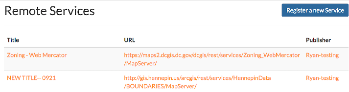
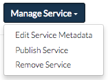

Working with Services¶
Exchange supports the registration of external WMS or ArcGIS REST Service layers. This allows a user to add remote web service layers, and combine them with existing layers to create a better, more detailed map.
Add a remote service¶
Exchange users are able to nominate external services, while those with administrator permissions, or those belonging to the csw_manager group, can then “publish” the layer so that it is available to all users.
- Click the Data link on the Exchange toolbar, and select Remote Services in the drop-down menu to open the Remote Services page.

- Click the Register a new Service button to add a new external layer.

- Fill in the service information with the URL and the Service name. Select the Service type from the drop-down menu. Exchange supports the addition of Web Map Service layers and ArcGIS REST Service layers. When you’re finished, click the Submit button.
You will be notified that the service was added successfully.

All of the information for the service, including supported services and the publication date, will be listed on the next page. A contact link will be available, so should you have questions, you can reach the individual who added the service to Exchange.

Managing services¶
Publish services¶
A user with administrator privileges needs to publish the service to make it available to other users.
- Select the service from the list of Remote Services to open its information page.
- Click the Manage Services button, and select Publish Service from the list.

The service will then be available, and can be discovered through Exchange Search and Explore.
Edit Service Metadata¶
Metadata provides the user with more information about the dataset. The more information made available, the better understanding the user will have of the data.
- From the information page of the service, click the Manage Services button, and select Edit Service Metadata from the list.
- Provide as much information as possible. Several of the fields are mandatory, and require your response.
- Classification/Caveat - If your data has a classification, it may be required for that to be populated according to your standard operating procedures.
- Title - It may be helpful to edit the title of the layer, as many of the services import with very generic titles.
- Category - Select a corresponding category to your data.
- License - If your data does not have any associated licenses, select Public Domain from the list.
- Provenance - Indicates the producer of the data content.
- Fees - If there are no fees associated to your data, type “none.”

- When you’re finished, click the Save button.
Remove a service¶
If a service is no longer needed, or the information becomes obsolete, an administrator can easily remove it from Exchange.
- From the information page of the service, click the Manage Services button, and select Remove Service from the list.
- Click the Yes, I am sure button to verify your selection.